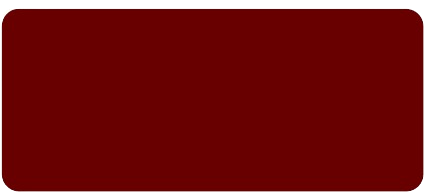
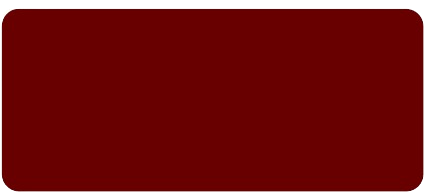

О, мій любий та незрівнянний Артемію! Ви й уявити не можете, якою безмежною є моя туга за Вами. Відтоді, як доля дозволила мені пізнати Ваш образ, я вже не належу самій собі. Жоден день не минає без думки про Вас, жодна ніч без Вашого силуету в моїх снах. Моє серце тремтить при самій лише згадці про Вас, а душа прагне одного, бодай на мить наблизитися, доторкнутися до Ваших вуст і передати в поцілунку усе те полум’я, що палає в мені невгасимо. Коли ж я маю щастя бачити Вас поруч, сили полишають мене, ноги мої слабшають, а серце б’ється так бурхливо, ніби прагне вирватися з грудей, аби стати ближчим до Вашого хоч на міліметр. І в ті миті, коли наші тіла зливаються воєдино, в мені розгорається такий вогонь, що здатен розтопити навіть найхолодніші льоди цього світу. О, Артемію… Ви не є мені байдужим, Ви є всім моїм світом. І дозвольте мені, з усією ніжністю та трепетом, поставити Вам одне єдине питання… Чи будете Ви моєю Валентинкою?